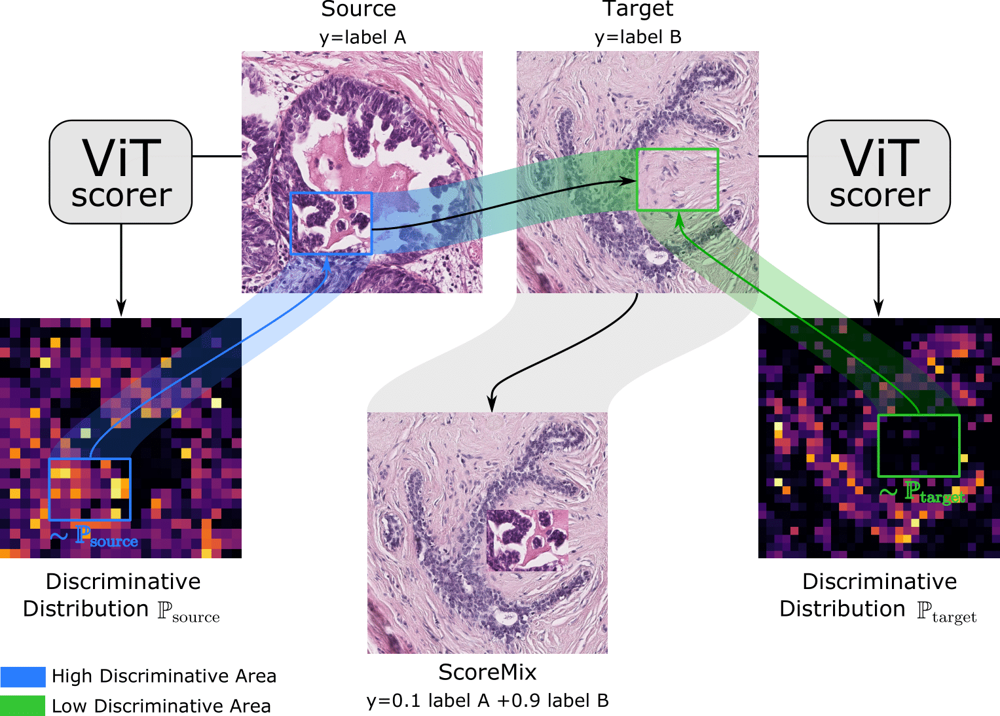

I am organizing the EPFL Computer Vision Talks.
I am organizing the EPFL Computer Vision Talks.
YouTube Channel
Check out our recent paper, OptTTA, the first learnable test-time augmentation policy for medical image segmentation
My research interests lie in the general area of machine learning, medical image analysis, and computer vision, particularly in deep representation learning, as well as their applications in domain adaptation/generalization and self-supervised learning. My research's ultimate goal is to develop robust deep image representations that capture and understand the world, as well as our human eye and mind, do. Those representations will form the basic building block of downstream tasks in many vision-based applications.
I am organizing the EPFL Computer Vision Talks.
YouTube Channel
 *New* OptTTA: Learnable Test-Time Augmentation for
*New* OptTTA: Learnable Test-Time Augmentation for
Source-Free Medical Image Segmentation Under Domain Shift
Devavrat Tomar, Guillaume Vray, Jean-Philippe Thiran, Behzad Bozorgtabar
MIDL 2022 (Oral)
project page · paper · github

*New* ScoreNet: Learning Non-Uniform Attention and Augmentation for
Transformer-Based Histopathological Image Classification
Thomas Stegmüller, Behzad Bozorgtabar, Antoine Spahr, Jean-Philippe Thiran
arXiv, 2022
paper
 *New* SRMA: Generalized Multi-source Feature Learning Using
*New* SRMA: Generalized Multi-source Feature Learning Using
Unsupervised Domain Adaptation for Colorectal Cancer Tissue Detection
Christian Abbet, Linda Studer, Andreas Fischer, Heather Dawson, Inti Zlobec,
Behzad Bozorgtabar, Jean-Philippe Thiran
MedIA Journal 2022
paper ·
github
 Self-Supervised Generative Style Transfer for One-Shot Medical Image Segmentation
Self-Supervised Generative Style Transfer for One-Shot Medical Image Segmentation
Devavrat Tomar, Behzad Bozorgtabar, Manana Lortkipanidze, Guillaume Vray,
Mohammad Saeed Rad, Jean-Philippe Thiran
WACV 2022
paper ·
github
 Learning Whole-Slide Segmentation from Inexact and Incomplete Labels using Tissue Graphs
Learning Whole-Slide Segmentation from Inexact and Incomplete Labels using Tissue Graphs
Valentin Anklin, Pushpak Pati, Guillaume Jaume, Behzad Bozorgtabar, Antonio Foncubierta-Rodríguez,
Jean-Philippe Thiran, Mathilde Sibony, Maria Gabrani, Orcun Goksel
MICCAI 2021
paper ·
github
 SOoD: Self-Supervised Out-of-Distribution Detection
SOoD: Self-Supervised Out-of-Distribution Detection
Under Domain Shift for Multi-Class Colorectal Cancer Tissue Types
Behzad Bozorgtabar, Guillaume Vray, Dwarikanath Mahapatra, Jean-Philippe Thiran
ICCVW 2021
paper ·
github
 Quantifying Explainers of Graph Neural Networks in Computational Pathology
Quantifying Explainers of Graph Neural Networks in Computational Pathology
Guillaume Jaume, Pushpak Pati, Behzad Bozorgtabar, Antonio Foncubierta-Rodríguez,
Florinda Feroce, Anna Maria Anniciello, Tilman Rau, Maria Gabrani, Jean-Philippe Thiran, Orcun Goksel
CVPR 2021
paper ·
github
 Self-Attentive Spatial Adaptive Normalization for Cross-Modality Domain Adaptation
Self-Attentive Spatial Adaptive Normalization for Cross-Modality Domain Adaptation
Devavrat Tomar, Manana Lortkipanidze, Guillaume Vray, Behzad Bozorgtabar, Jean-Philippe Thiran
IEEE T-MI 2021
paper ·
github
 Self-Rule to Adapt: Learning Generalized Features from Sparsely-Labeled Data
Self-Rule to Adapt: Learning Generalized Features from Sparsely-Labeled Data
Using Unsupervised Domain Adaptation for Colorectal Cancer Tissue Phenotyping
Christian Abbet, Linda Studer, Andreas Fischer, Heather Dawson, Inti Zlobec,
Behzad Bozorgtabar, Jean-Philippe Thiran
MIDL 2021
paper ·
github
 Self-Taught Semi-Supervised Anomaly Detection on Upper Limb X-rays
Self-Taught Semi-Supervised Anomaly Detection on Upper Limb X-rays
Antoine Spahr , Behzad Bozorgtabar, Jean-Philippe Thiran
ISBI 2021
paper ·
github
 Benefiting from Bicubically Down-Sampled Images for Learning Real-World Image Super-Resolution
Benefiting from Bicubically Down-Sampled Images for Learning Real-World Image Super-Resolution
Mohammad Saeed Rad, Thomas Yu, Claudiu Musat, Hazım Kemal Ekenel,
Behzad Bozorgtabar, Jean-Philippe Thiran
WACV 2021
paper ·
| Personalized Health and Related Technologies (PHRT) |
| Swiss Cancer League |
| Discovery Translation Fund (DTF 2.0) |
| 2019-Present | Image analysis and pattern recognition (EE-451-4 ECTS- Bozorgtabar & Thiran), EPFL |
| 2019-Present | Lab in signal and image processing (EE-490(f)-4 ECTS- Bozorgtabar & Thiran), EPFL |